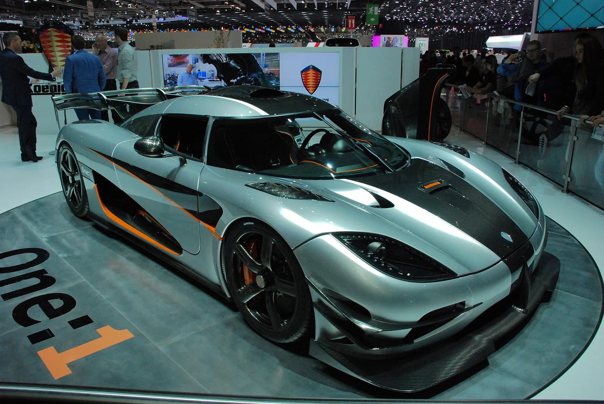
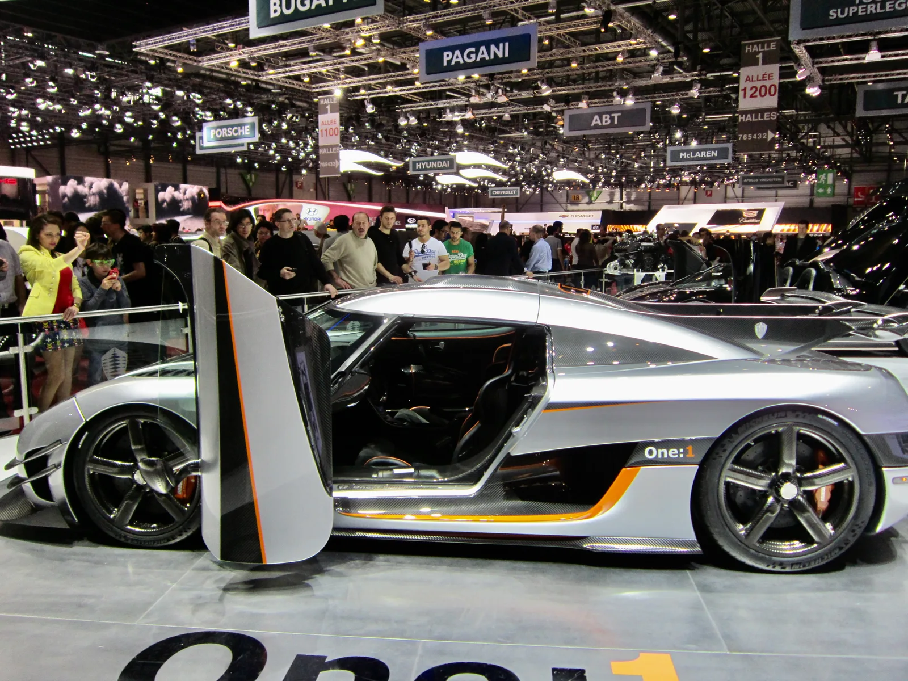
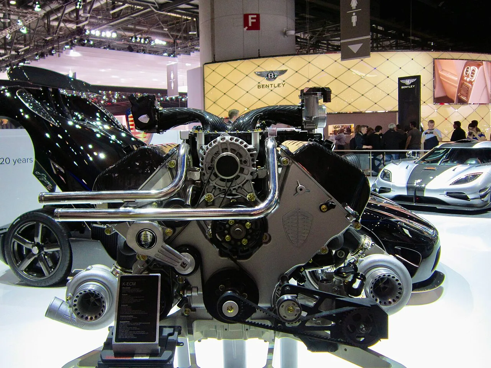
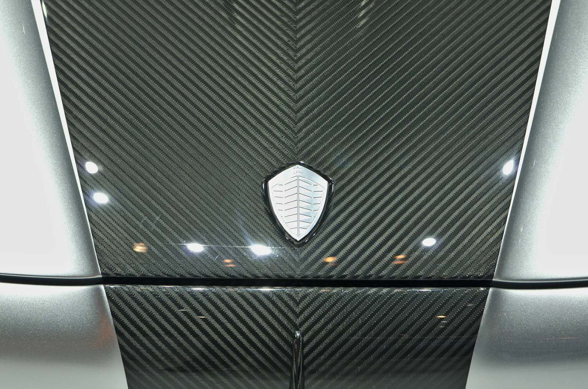
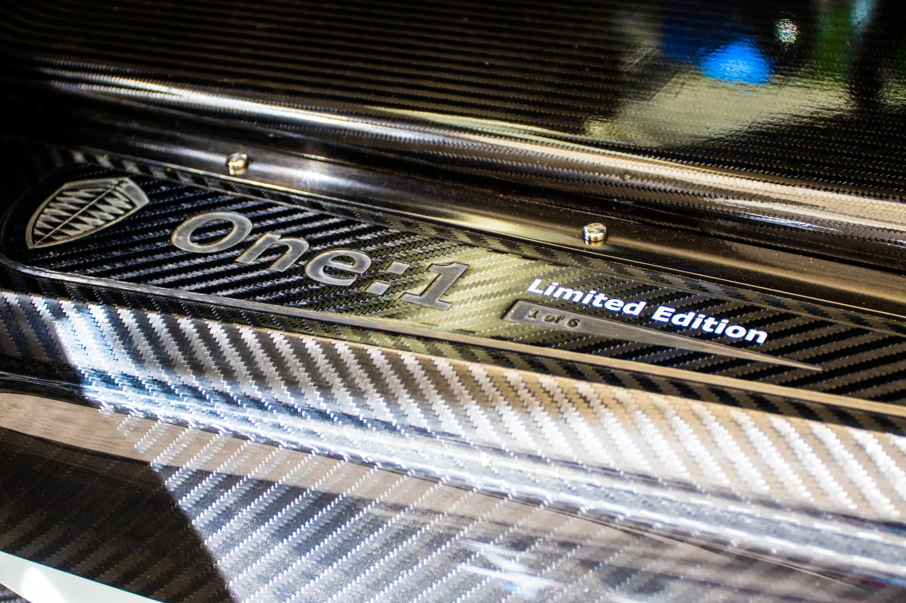
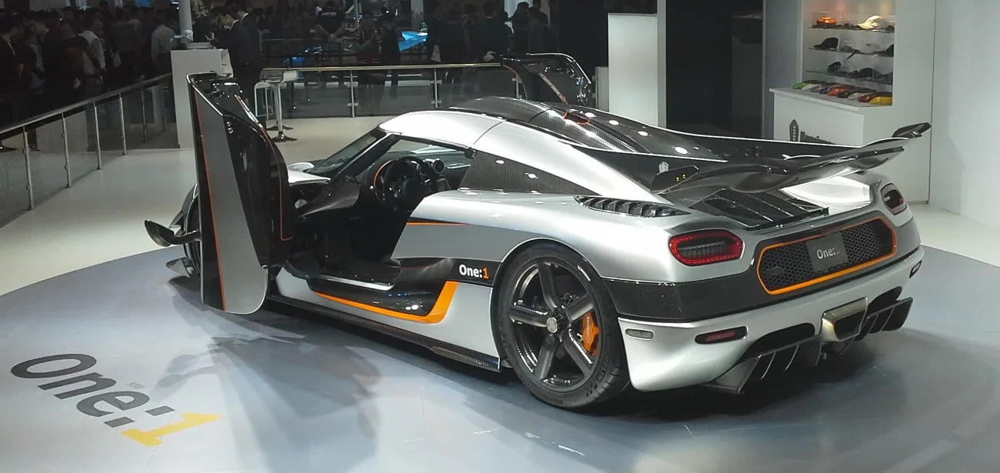

▲ 2014년 제네바 모터쇼에서 처음 공개된 쾨닉세그 원:1. 세계 최초로 1메가와트 출력을 낸 양산차라는 타이틀을 달았다 ⓒ Eduardo Parise, Wikimedia Commons (CC BY 2.0)
마력(hp)도 아니고 킬로와트(kW)도 아니다. 이 차의 출력판에는 '메가와트(MW)'라는, 보통 발전소나 대형 선박에나 쓰이는 단위가 찍혀 있다.
2014년 제네바 모터쇼. 스웨덴의 초소형 하이퍼카 제조사 쾨닉세그(Koenigsegg)가 무대에 올린 차 한 대가 자동차 업계의 출력 경쟁 규칙을 다시 썼다. 이름은 원:1(One:1). 세계 최초로 1메가와트, 즉 1,000킬로와트급 출력을 낸 양산차라는 타이틀을 들고 나왔다. 단 7대만 만들어진 이 차가 12년이 지난 2026년, 경매 시장에 다시 등장하며 재조명받고 있다. 확인된 스펙과 기록만 정리했다.
1. 2014년 제네바, 출력 단위 자체를 바꿔버린 차
쾨닉세그는 원:1을 소개하며 스스로를 '메가카(Megacar)'라고 불렀다. 마력이나 킬로와트로 경쟁하던 하이퍼카 시장에서, 아예 상위 단위인 메가와트를 기준점으로 들고나온 것이다. 1메가와트는 1,000킬로와트, 환산하면 약 1,360마력(PS, E85 에탄올 연료 기준)에 해당한다. 당시 기준으로 부가티 베이론 슈퍼 스포트(1,200마력), 헤네시 베놈 GT(1,244마력) 등 경쟁 하이퍼카들을 모두 웃도는 수치였다.
| 항목 | 내용 |
|---|---|
| 공개 시점 | 2014년 3월, 제네바 모터쇼 |
| 생산 대수 | 7대(고객 인도 6대 + 프로토타입 1대), 전량 사전 판매 완료 |
| 차체 구조 | 풀 카본파이버 모노코크 + 카본파이버 바디 패널 |
| 구동 방식 | 후륜구동, 7단 듀얼클러치 변속기(쾨닉세그 자체 개발 '트리덱스') |
| 닉네임 | 메가카(Megacar) — 세계 최초 1메가와트 양산차 |

▲ 위로 열리는 도어를 개방한 원:1의 측면. 차체 대부분이 카본파이버로 제작돼 경량화를 극대화했다 ⓒ Ank Kumar, Wikimedia Commons (CC BY-SA 4.0)
2. 5.0L 트윈터보 V8, 1메가와트를 뽑아낸 방법
심장은 쾨닉세그가 자체 설계한 5.0리터 트윈터보 V8이다. 가변 지오메트리 터보차저를 적용해 저회전부터 고회전까지 터보랙을 최소화했고, E85 에탄올 연료를 쓸 경우 7,500rpm에서 1메가와트(약 1,360마력), 6,000rpm에서 최대 1,371Nm의 토크를 낸다. 다만 구하기 쉬운 일반 무연 프리미엄 가솔린을 넣으면 출력은 1,176마력으로 낮아진다. 사실상 이 차의 '1메가와트' 타이틀은 에탄올 연료를 전제로 한 수치다.
| 항목 | 내용 |
|---|---|
| 엔진 | 5.0L 트윈터보 V8(가변 지오메트리 터보) |
| 최고출력 | 1메가와트(약 1,360마력, E85 연료 기준) / 1,176마력(무연 프리미엄 가솔린 기준) |
| 최대토크 | 1,371Nm(6,000rpm) |
| 변속기 | 7단 듀얼클러치 |
| 구동방식 | 후륜구동 |

▲ 제네바 모터쇼에 전시된 원:1의 5.0L 트윈터보 V8 엔진 실물. 양쪽에 장착된 트윈터보차저가 저회전부터 고회전까지 터보랙을 줄여준다 ⓒ Ank Kumar, Wikimedia Commons (CC BY-SA 4.0)
📍 왜 하필 메가와트인가
1메가와트는 일반 가정 수백 채가 동시에 쓰는 전력량에 맞먹는다. 쾨닉세그는 이 비유를 그대로 마케팅에 활용해 '자동차가 낼 수 있는 출력의 상식을 깨뜨렸다'는 메시지를 전달했다. 이후 부가티 시론(1,500마력), 헤네시 베놈 F5 등 후발 하이퍼카들도 잇따라 메가와트급 출력을 표기하기 시작하면서, 원:1은 이 '메가와트 경쟁'의 출발점으로 남았다.
쾨닉세그 공식 홈페이지에서 원:1의 전체 기술 제원을 확인할 수 있다. 공식 스펙 페이지 바로가기
3. 이름이 곧 스펙 — 무게 1kg당 1마력의 의미
'원:1(One:1)'이라는 이름 자체가 이 차의 정체성을 그대로 담고 있다. 유체와 평균 체중의 운전자까지 포함한 공차중량이 1,360kg인데, 출력도 1,360마력(PS)이다. 즉 무게 1kg당 정확히 1마력을 내는 '1:1'의 파워 대 웨이트 비율을 구현했다는 뜻이다. 당시 어떤 양산 하이퍼카도 이 비율에 도달하지 못했다.
| 모델 | 공차중량 | 비고 |
|---|---|---|
| 쾨닉세그 원:1 | 1,360kg | 파워 대 웨이트비 1:1 달성 |
| 쾨닉세그 아게라 R | 1,435kg | 원:1보다 약 75kg 무거움 |
이런 경량화의 비결은 차체 전체를 감싼 카본파이버다. 모노코크 섀시부터 바디 패널, 도어, 윙까지 대부분 카본파이버로 제작해 무게를 줄이면서도 강성을 유지했다. 실제로 트렁크와 프런트 서스펜션 마운트 주변까지 카본파이버 직조 패턴이 그대로 노출돼 있는데, 도장을 하지 않고 카본 결을 그대로 드러낸 것도 무게를 줄이려는 선택 중 하나였다.

▲ 도장을 하지 않고 그대로 노출한 보닛의 카본파이버 결. 차체 대부분을 카본파이버로 제작해 1,360kg의 공차중량을 달성했다 ⓒ Clément Bucco-Lechat, Wikimedia Commons (CC BY-SA 3.0)
4. 0-300-0km/h 17.95초 — 가속과 제동을 동시에 세운 기록
원:1이 세운 기록 중 가장 상징적인 것은 2015년의 0-300-0km/h 테스트다. 정지 상태에서 시속 300km까지 가속한 뒤 다시 완전히 멈춰 서는 데 걸린 시간을 합산하는 방식으로, 원:1은 가속 11.92초, 제동 6.03초를 더해 총 17.95초를 기록했다. 이전까지 이 부문 기록은 같은 쾨닉세그의 아게라 R이 2011년에 세운 21.19초였는데, 원:1이 이를 3초 이상 단축했다.
| 항목 | 기록 |
|---|---|
| 0-300km/h 가속 | 11.92초 |
| 300-0km/h 제동 | 6.03초 |
| 0-300-0km/h 합산 | 17.95초(2015년 세계기록, 쾨닉세그 자체 테스트트랙) |
| 0-400km/h 가속 | 약 20초(제조사 발표) |
| 400-0km/h 제동 | 약 10초(제조사 발표) |
| 100-0km/h 제동거리 | 약 28m |
✅ 최고속도, 실측 기록은 없다
제조사는 이론상 최고속도를 시속 약 440km(273마일) 안팎으로 제시했지만, 실제 주행으로 이 수치를 공식 검증한 적은 없다. 벨기에 스파-프랑코르샹 서킷에서는 2015년 2분 32초대(2:32.14)로 트랙 기록을 세우기도 했으나, 소음 규제 때문에 완전한 전력 질주는 하지 못한 채로 나온 기록이라는 점도 함께 알려져 있다.
5. 12년 만에 다시 스포트라이트 — 2026년 경매에 오른 이유
단 7대뿐인 원:1은 애초에 팔릴 때마다 화제였다. 이 중 한 대는 적도기니 부통령 아들의 초호화 컬렉션에서 몰수돼, 자국 부패 자산 환수 절차에 따라 경매에 부쳐진 적도 있다. 이 차는 주행거리 597km에 불과한 '거의 새 차' 상태로 나와 약 462만 달러(약 63억원)에 낙찰됐다.
여기에 2026년, 또 다른 원:1 한 대(섀시 넘버 7108)가 RM 소더비스의 독일 테게른제 경매에 출품되며 다시 한 번 스포트라이트를 받았다. 이 차는 과거 '용병들에게 도난당했다'는 소문이 돌았으나 사실이 아닌 것으로 확인된 개체이기도 하다. 공개된 사전 추정가는 800만~1,000만 유로(약 120억~150억원) 선이었다.
다만 2026년 7월 4일 실제 경매 결과는 유찰이었다. 최고 입찰가가 약 800만 유로 선까지 올라갔지만 하한 추정가에도 미치지 못해 판매가 성립되지 않았다. 이날 경매 전체(24개 출품작)의 낙찰률은 91%, 총 낙찰 총액은 약 1,050만 유로였는데, 원:1 한 대의 추정가만으로도 전체 낙찰 총액에 근접했던 점을 고려하면 이번 유찰이 결과에 미친 영향이 작지 않았던 셈이다. 데뷔 12년이 지나서도 여전히 '세계 최초 1메가와트 양산차'라는 타이틀만으로 최상위권 추정가를 받았지만, 이번엔 새 주인을 찾지 못한 채 경매를 마쳤다.

▲ 도어 실에 새겨진 'One:1 Limited Edition, 1 of 6' 명판. 프로토타입을 제외하면 고객에게 인도된 차량은 단 6대뿐이다 ⓒ christianb_7, Wikimedia Commons (CC BY-SA 2.0)
2026년 경매 출품 관련 소식은 관련 매체 보도에서 자세히 확인할 수 있다. 경매 관련 보도 바로가기

▲ 원:1의 후면. 대형 리어 윙과 듀얼 익저스트, 범퍼 중앙의 One:1 레터링이 보인다 ⓒ Navigator84, Wikimedia Commons (CC BY-SA 3.0)
6. 요약
쾨닉세그 원:1은 2014년 제네바 모터쇼에서 공개된, 세계 최초로 1메가와트(약 1,360마력) 출력을 낸 양산차다. 5.0L 트윈터보 V8 엔진과 카본파이버로 짠 1,360kg의 가벼운 차체를 결합해 무게 1kg당 1마력이라는 '1:1'의 파워 대 웨이트비를 실현했고, 이 비율이 곧 차 이름이 됐다.
단 7대만 만들어진 원:1은 2015년 0-300-0km/h 17.95초 세계기록을 세우며 하이퍼카 성능의 기준을 새로 썼다. 이후 부가티, 헤네시 등 경쟁사들도 잇따라 메가와트급 출력 경쟁에 뛰어들면서, 원:1은 이 흐름의 출발점으로 남았다.
12년이 지난 2026년에도 원:1은 경매 시장에서 최상위권 대접을 받고 있다. 독일 RM 소더비스 테게른제 경매(2026년 7월 4일)에 출품된 섀시 넘버 7108의 추정가는 800만~1,000만 유로 선이었으나, 실제로는 최고 입찰가가 약 800만 유로에 머물러 유찰됐다. 단 6~7대뿐인 희소성과 '세계 최초 1메가와트' 타이틀이 여전히 가치를 뒷받침하지만, 이번 경매에서는 새 주인을 찾지 못했다.